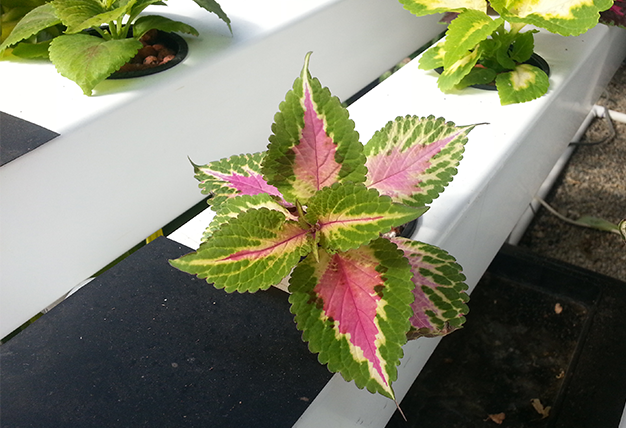

OUR SERVICES

CITY HYDROPONICS’ approach is to integrate hydroponic systems into environments that do not require the classic land acquisition for crop growth.
The use of non-traditional environments, as opposed to farms that require acres and acres of land, and are susceptible to pollution offers many benefits in the form of more efficient use of space, controlled environments reducing the impact of weather, contaminants, and other uncontrollable variables, production of more organic pesticide free green crops, all resulting in crops that are more abundant and safer for consumption. The beauty of this type of system is that it is an actual ecological system within an unnatural or artificial environment.
OUR MISSION
CITY HYDROPONICS is a company founded in Newark whose concept encompasses all the elements necessary to foster employment and education in the industry of hydroponics, promote healthy living, and provide new business opportunities to small start-up companies. It further engages community involvement and general public awareness of the shortage of food in many areas of our state and around the world.
Our mission is to demonstrate the power of sustainable urban farming through the redevelopment of unused areas and underutilized structures in urban centers through sound ecological principles, methods and techniques brought on by Innovative Urban Farming™.
Source: "Who Are We" section of Information Pamphlet